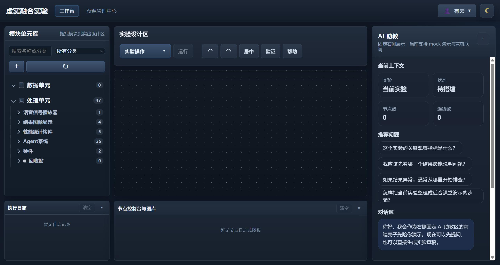
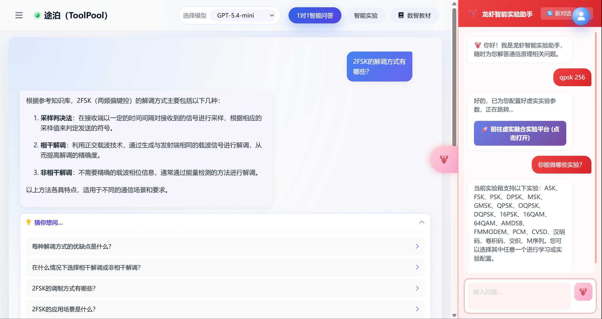
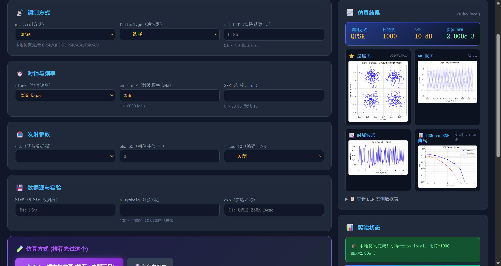
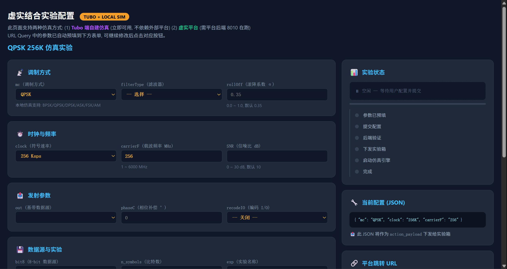

Fig. 02 — Architecture · 自然语言 → 实验意图，按知识库自动配置


Project 01 / 03
途泊 · 龙虾实验助手
把「龙虾实验助手」从独立页面升级为实验全程随时可调的全局浮窗 AI 助手，打通真实实验数据回传链路——「一句话进实验 → 自动配置 → 结果实时回传」。
Overview
全局浮窗 AI 助手 + 一句话进实验 + 实验数据实时回传，入口操作由 4~5 步缩减至 1~2 步。我独立负责产品交互、数据闭环与 Prompt 迭代。
Challenge
原实验入口需 4~5 步、助手只能独立页面使用，实验过程中无法随时提问与配置。核心挑战是把「配置 → 提问 → 结果」的成本降到最低，并打通真实数据回传，让 AI 从「能回答问题」进化为「理解实验行为」。
Solution
将助手升级为实验全程可调用的全局浮窗，用一句话进实验替代 4~5 步配置，并打通「实验箱 → 平台」的数据实时回传链路，形成「请求 → 配置 → 结果」的完整闭环。
Impact
实验入口步骤由 4~5 步缩减至 1~2 步，场景识别由 15+ 拓展至 20+；5 个实验组试用、30+ 条反馈驱动多轮 Prompt 与交互迭代，真实数据回传形成平台闭环。
Reflection
交互优化的本质是缩短用户到达目标的路径；数据闭环让 AI「越用越准」。Prompt 优化应围绕「回答边界 + 交互流程」设计——好产品，就是让复杂消失。